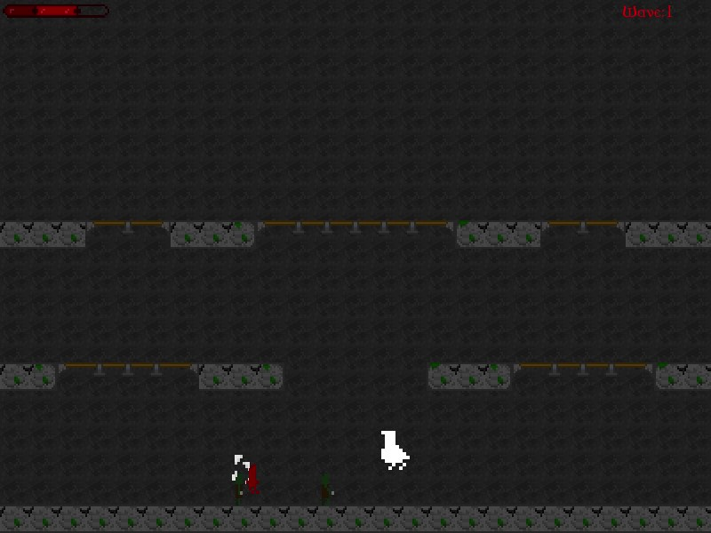

Machine Learning
Overview
Towards the end of first year we learnt SFML and were tasked with making a game at the end. The game I made was a survival 2D game. It features hitboxes, music and sfx, a wave system, tilemap, sprite sheet and animations, enemy pathfinding.
The project is setup with several game states that the game switches between. Utilises a sprite sheet for different animations including running, jumping, dodging and attacking.
The game is very simple and the code upon looking back isn't anywhere near perfect but this game has a special place in my heart as it's the first game I'd made from scratch in c++. It also helps put in perspective how far I've come since making it and provides good lessons on what to do or not to do when creating a game especially from a code structure stand point (and a UX standpoint).
I remember one of the biggest challenges was getting the tile collisions to work properly as there were some platforms you could jump and drop down through. I remember coming up with several solutions and always finding edge cases or problems with my chosen collisions solutuion.
The game uses a tile sheet system to build the level where I could define what tiles should appear where in a simple 2D array defined in code